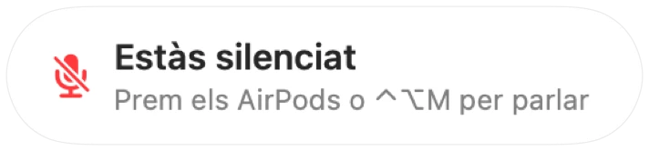

Un avís d'«Estàs silenciat» per a qualsevol app de trucades
Zoom t'avisa quan parles mentre estàs silenciat. La majoria d'altres apps no ho fan, i les trucades web gairebé mai. Expliques una cosa durant un minut i després t'adones que tothom està esperant.
Muffle detecta la veu mentre estàs silenciat i mostra un avís en qualsevol app. Quan la trucada utilitza AirPods o uns auriculars, escolta el micròfon integrat del Mac, i només el nivell de volum. No es grava res.
Activa l'avís
- 1
Instal·la Muffle i permet l'accés al micròfon.
- 2
Assegura't que l'opció «Avisa'm quan parli mentre estic silenciat» estigui activada a la Configuració de Muffle.
- 3
Uneix-te a una trucada amb AirPods o uns auriculars i silencia el micròfon.
- 4
Comença a parlar. Apareixerà l'avís «Estàs silenciat».

- T'uneixes a una trucada mentre encara estàs silenciat de l'anterior? Muffle t'avisa tan bon punt comença la trucada.
- Escriure amb el teclat no activa l'avís. Només ho fa la veu continuada.
Preguntes
L'avís funciona amb el micròfon integrat del Mac?
Funciona quan la trucada utilitza AirPods o uns auriculars. Si la trucada fa servir el micròfon del mateix Mac, aquest micròfon està silenciat i no et pot sentir.
S'enregistra el meu àudio?
No. Muffle només mesura el nivell de volum i mai enregistra, emmagatzema ni envia cap àudio.